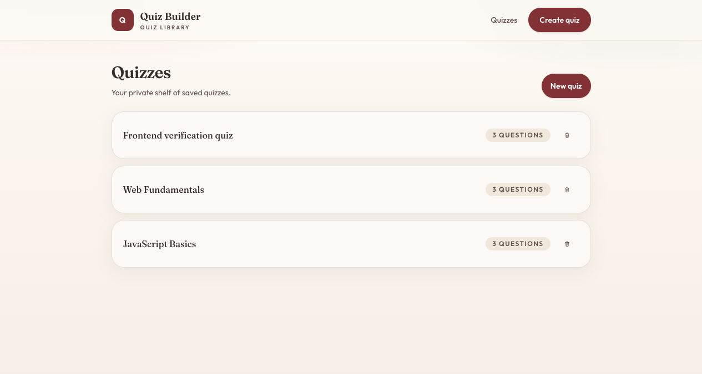
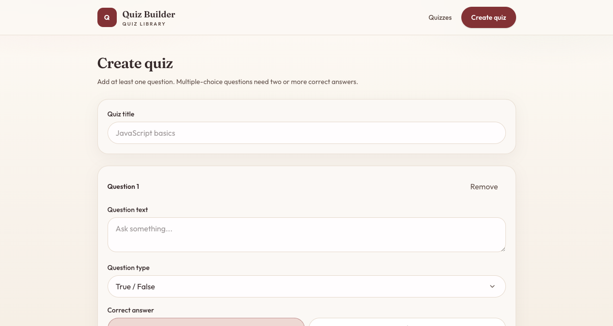
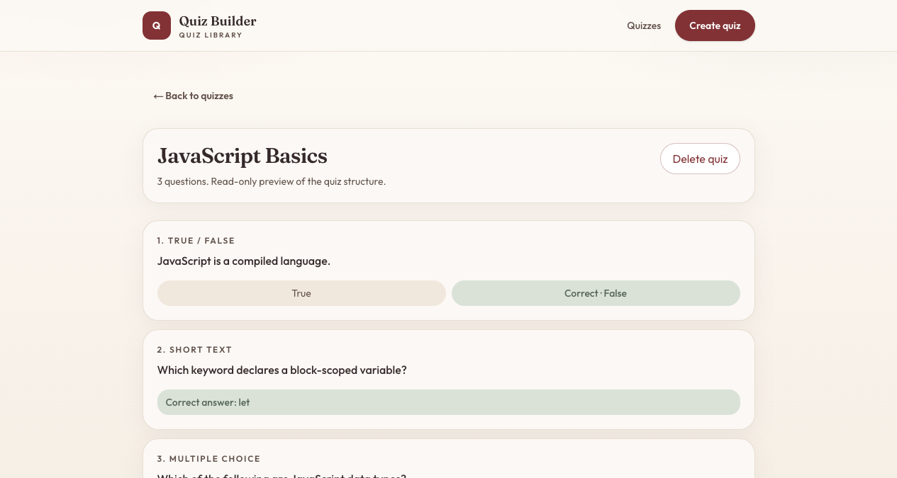

Create, list, preview, and delete quizzes
Full-stack assessment app: Next.js frontend, Express API, Prisma and SQLite. Details pages are read-only previews of quiz structure.



GitHub Pages hosts this preview only. The working app needs the Express API and SQLite database — clone the repo and follow the README to start frontend and backend locally.